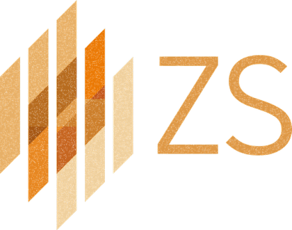
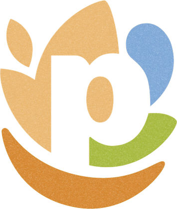

Strategy lens The build
A career built like a skyscraper, on a strong foundation

ZS AssociatesNov 2020 – May 2024
PepsiCoJun 2024 – May 2026Career timeline
B.Architecture
2015 – 2020
- President, Student Activity Center (1 of 900). Organized Innovision-2016 with a footfall of 1,300
Associate Consultant
Nov’20 – May’24
- Selected to represent the India team in Chicago at client’s office (1 of 35+ associate consultants)
Associate Manager
Jun’24 – May’26
- “Acting as Owner” Smiles Award for excellent stakeholder engagement and project initiatives
PGP TBM
Jun’26 – May’27
- Start-Up Weekend winner
- President, Consulting Club (1 of 470)
- Drop-Shipping Challenge winner, held across the cohort to ideate, launch and scale a D2C business
How I priced PepsiCo beverages against competitors across the United States
Associate Manager, Revenue Growth Management, PepsiCoJune 2024 to May 2026
The fight is not at a city level or a state level, but at account(store) level. Every product fights for the purchase from consumer.
We consider only relevant products in an account as our competition.
That is how I helped defend key accounts of PepsiCo and increased sales by $4 Million in them.
Illustrative mapPepsi is at constant war with its competitors in the North America soft drink market. I helped them defend their share and increase sales by $4 million by picking up the right competitor and optimizing our promo tactics in each account.
Competition Selection: An accurate set of competitor(s) will give us dependable insights about which variable is impacting our sales the most (competitors? or other factors?). So, instead of competing with every product in a given account, I updated the competition pool by prioritizing the closest possible competitor(s).
By indexing their prices, portion size, volume sales and other important attributes, only 1 to 3 top competitors in each account are selected for each PepsiCo beverage.
I created a relative competitive price elasticity variable to pinpoint the effect of price changes of own and competitor products on the sales of our products. This helps us price PepsiCo beverages, minimize the impact of competitor price changes on our sales and achieve the set objectives.
Then, leveraging the historical weekly and promo-tactic wise sales data, we map which promo-tactic to deploy for each beverage in each week. Coupling this promo optimization calendar with price elasticity insights, we price and promote our products and minimize cannibalization of our products.
Application of my PepsiCo learnings in MBA projects
The restaurant industry presents an interesting revenue growth challenge, with restaurants operating across two distinct sales channels 1) dine-in and 2) online delivery. Building on my learnings from PepsiCo's Revenue Growth Management framework, I envisioned a MarTech solution to help restaurants increase sales and profitability through better product mix, pricing and promotional strategies.
Channel Strategy: Unlike traditional RGM, restaurants need to optimize two demand channels independently. I structured the solution around helping restaurants grow dine-in sales through menu mix, pricing and promotions, while separately optimizing online sales through food delivery app - Talabat. This allows restaurants to prioritize different dishes across channels based on their growth opportunities.
Dish-Level Price Elasticity: Drawing from my experience in regression analysis and price elasticity at PepsiCo, I wanted to bring similar intelligence to individual restaurant dishes. The model estimates price and promotional elasticity separately for dine-in and online orders, identifying which dishes can sustain price increases and which respond better to promotional support.
Promotional Optimization: Leveraging historical dish-level sales, pricing, margins and promotional data, the framework identifies the right dish, price and promotional tactic for each day and daypart. It also accounts for product cannibalization and cross-channel demand shifts.
Competition Selection: Unlike retail, where competitor products can often be identified through relatively structured product categories, food delivery and quick-commerce platforms have vast catalogues with substitutes across categories: a burger may compete with pizza, pasta or even biryani on some occasions. I have deliberately excluded competitor restaurant data from the current model, both to respect platform data privacy and to avoid introducing significant uncertainty through poorly defined competitive sets. I am still working on competition selection logic for digital marketplaces with huge catalogues.
Finally, I envisioned coupling these elasticity insights with Gurobi optimization to build three decision engines: dine-in growth, Talabat growth and joint channel optimization; translating complex demand insights into actionable, restaurant-specific pricing and promotional calendars.
Strategy lens The short version
Six years, three firms. I built one of them myself.
Consulting at ZS, commercial strategy at PepsiCo, then a D2C brand from zero. I bring structure to ambiguous problems and tie the work to a number that moved.
Nov ’20 – May ’24 Cost
At ZS, I moved 13% of a $450M promo budget to where it paid back.
Associate Consultant, Decision Analytics, Pune. I also took manual reporting off six teams.
Jun ’24 – May ’26 Growth
At PepsiCo, pricing across 180 SKUs added $4M in sales.
Associate Manager, Revenue Growth Management, Hyderabad. I used regression to show which prices and promotion weeks paid back in the US.
Jul ’26 – Present Market entry
Then I built one: The Recovery Company.
A D2C recovery and wellness brand on Shopify. I co-founded it and manage the P&L end to end. Returns fell to 20%, against a ~30% industry average.
Independent research Strategy
A five-year strategy for an e-commerce operating system.
A five-step study of Shiprocket: value chain, competitive landscape, market economics, the AI-assistant race, and a plan for 2026–30.
Alongside the MBA Operations
Four working systems that replace manual work.
One agent writes a finished PowerPoint for each of 40 geographies. The others run a 3D retail prototype, a store’s order operations and a job search.
Rooms I’ve helped run Leadership
Elected President of the Consulting Club, 1 of 470.
Picked to lead before that too, from the kabaddi mat to a ZS client site.
- 25%Manoj Kohli merit scholarship, 5% of the batch
- WinnerDrop-Shipping Challenge, Masters’ Union cohort
- 3xNational champion, Inter-NIT Kabaddi; captain 2018–19
- 1 of 900President, Student Activity Center; Innovision-2016, footfall of 1,300
- 1 of 35+Represented ZS India at a client site in Chicago, 2024
- 2026“Acting as Owner” Smiles Award, PepsiCo
Education Foundations
Trained as an architect. Now building businesses.
- 2026 – nowPGP, Technology & Business Management, Masters’ Union, Gurugram
- 2015 – 20B. Planning & Architecture, NIT Rourkela, 7.21/10. IIT-JEE AIR 2662
- 2013 – 15Triveni Public School, Gudivada. XII: 95.3%, X: 93%, Head Boy, 99th percentile in India, International Maths Olympiad
- 2020BCG Strategy Consulting Virtual Experience; Yale New Market Initiatives
Next steps
Let’s talk about your next strategy problem.
Open to conversations on commercial strategy, collaborations on RecoveryCo, or comparing notes on AI-assisted systems. Email is the fastest way to reach me.